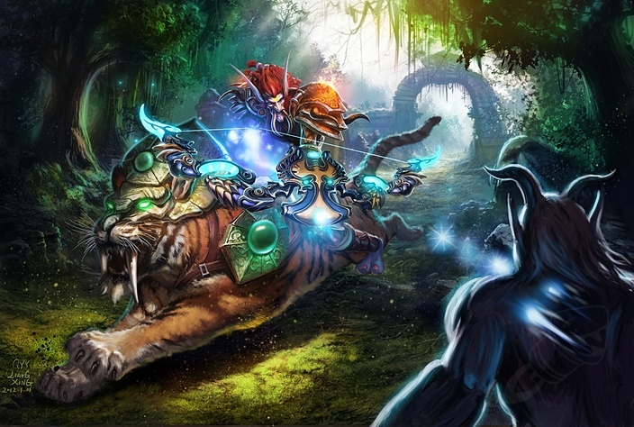

From an early age, the call of the wild draws some adventurers from the comfort of their homes into the unforgiving primal world outside. Those who endure become Hunters. Masters of their environment, they are able to slip like ghosts through the trees and lay traps in the paths of their enemies.
